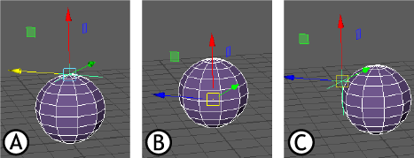
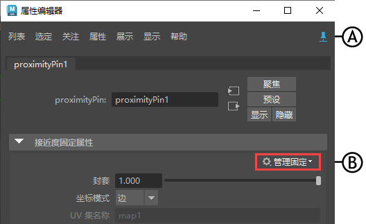

- 在“动画”(Animation)或“绑定”(Rigging)菜单集中：“约束 > UV 固定”(Constrain > UV Pin)>

“UV 固定”(UV Pin)从简单的 UV 坐标派生其位置，而接近度固定(Proximity Pin)使用变换中的输入矩阵派生其位置。
本主题介绍了 “UV 固定”(UV Pin)窗口中的选项。若要创建 UV 固定节点，请参见创建 UV 固定(Create a UV pin)。
注： 在属性编辑器(Attribute Editor)的“UV 固定”(UV Pin)选项卡中，还提供了适用于“UV 固定”(UV Pin)约束的其他控件。在本主题中的“连接”(Connections)和“坐标系”(Coordinate System)部分之后介绍了这些控件。
连接(Connections)
“连接”(Connections)区域可用于指定目标几何体上固定位置的确定方式以及输出矩阵的连接方式。- 固定位置(Pin locations)
- 选择固定位置的派生位置：
- “组件”(Components)：从选定组件的位置派生
- “变换”(Transforms)：从曲面上距选定变换最近的点派生。
- 输出(Output)
- 指定输出矩阵的连接方式。可以在节点编辑器(Node Editor)中查看连接。
现有变换(Existing Transform) 使用选定变换并将其连接到 uvPin 的输出。（这是默认设置。） 新变换(New Transform) 在指定的 UV 坐标处创建新变换，并将其连接到节点输出。 新定位器(New Locator) 在指定的 UV 坐标处创建新定位器，并将其连接到节点输出。 矩阵(Matrix) 创建（但不连接）节点上的任何输出栓，保持连接可用。
坐标系(Coordinate System)
此区域确定从曲面法线和 UV 坐标派生时输出如何与曲面坐标系对齐。由于“UV 固定”(UV Pin)是程序节点，因此创建后可以继续在属性编辑器(Attribute Editor)中编辑这些设置，包括可以创建额外的输入和输出。
- 法线轴(Normal Axis)
- 指定输出的坐标系中的哪个轴应与曲面法线对齐。不能与“切线轴”(Tangent axis)相同。
- 切线轴(Tangent Axis)
- 指定输出的坐标系中的哪个轴与曲面切线对齐。不能与“法线轴”(Normal axis)相同。
- UV 集名称(UV Set Name)
- 如果场景中包含多个 UV 集，请选择要使用的集。
- 归一化等参线(Normalize Isoparms)
-
注： 此选项仅适用于 NURBS。
- 由于 NURBS 的坐标值可能以不同方式进行参数化，因此请激活此设置以使用绝对值。
- 相对空间模式
-
使用该菜单可设置节点解算空间：“世界”(World)、“局部”(Local)或“自定义”(Custom)。设置不同的相对空间
使用“UV 固定”(UVpin)和“定位器”(Locator)的相对空间模式：A.“世界”(World)，B.“局部”(Local)，C.自定义(Custom)
有关这些空间的描述，请参见世界空间、对象空间和局部空间。空间 功能 世界(World) （默认）使用场景的中心作为原点。
局部(Local) 使用几何体空间进行解算。
自定义(Custom) 使用外部矩阵作为解算空间。
属性编辑器(Attribute Editor)选项
属性编辑器(Attribute Editor))的“UV 固定”(UV Pin)选项卡包含了“连接”(Connections)和“坐标系”(Coordinate System)部分中未涵盖的其他设置。
- “管理固定”(Manage Pins)
-

属性编辑器：A.“固定选项卡”(Pin Tab)，B.“管理固定”(Manage Pins)菜单
- 使用此菜单可以管理可应用于固定节点的运算。从以下操作中进行选择：
选择几何体(Select Geometry) 选择受 UV 固定影响的几何体。 将几何体替换为选定项(Replace Geometry with Selected) 将固定的几何体与其他选定几何体交换。 从变换创建固定(Create Pins from Transforms) 创建新的“固定输出”(PinOutput)节点。若要从变换创建固定，请选择变换节点（定位器/几何体/组等）。固定节点输出固定值，并将其连接到节点（具体取决于“固定”(Pin)默认设置）。 从组件创建固定(Create Pins from Components) 创建新的“固定输出”(PinOutput)节点。若要从组件创建“固定”(Pin)，请首先在“UV 固定”(uvPin)选项输出菜单中切换“固定”(Pin)默认输出值，使输出不为“现有变换”(Existing transform)。然后，“固定”(Pin)节点将输出固定值，并根据“固定”(Pin)默认设置将其连接到节点。如果将固定默认值设置为“现有变换”(Existing transform)，则会显示一条警告，通知您在从“组件”(Components)创建“固定”(Pin)时使用“现有变换”(Existing transform)作为输出。若要更改输出类型，请使用“编辑固定默认值”(Edit Pin Defaults)菜单。 编辑固定默认值(Edit Pin Defaults) 打开“UV 固定”(UV Pin)窗口，从中可以为默认固定设置新值：“现有变换”(Existing Transform)、“新变换”(New Transform)、“新定位器”(New Locator)或“矩阵”(Matrix)。 注： 建议在使用此菜单时使用“属性编辑器”(Attribute Editor)“固定选项卡”(Pin Tab) ，以在选择更改时保持当前属性选项卡的显示。
，以在选择更改时保持当前属性选项卡的显示。
- 法线覆盖(Normal Override)
- 将“法线覆盖”(Normal Override)设置为“轨道”(Rail)，可以将“UV 固定”(UV Pin)约束连接到轨道曲线几何体。